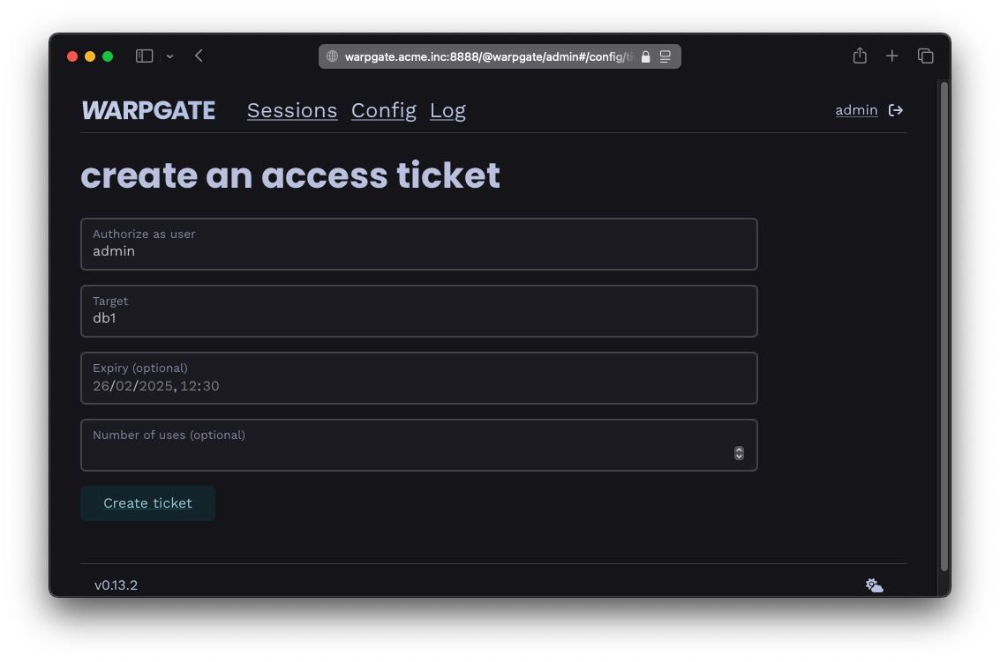
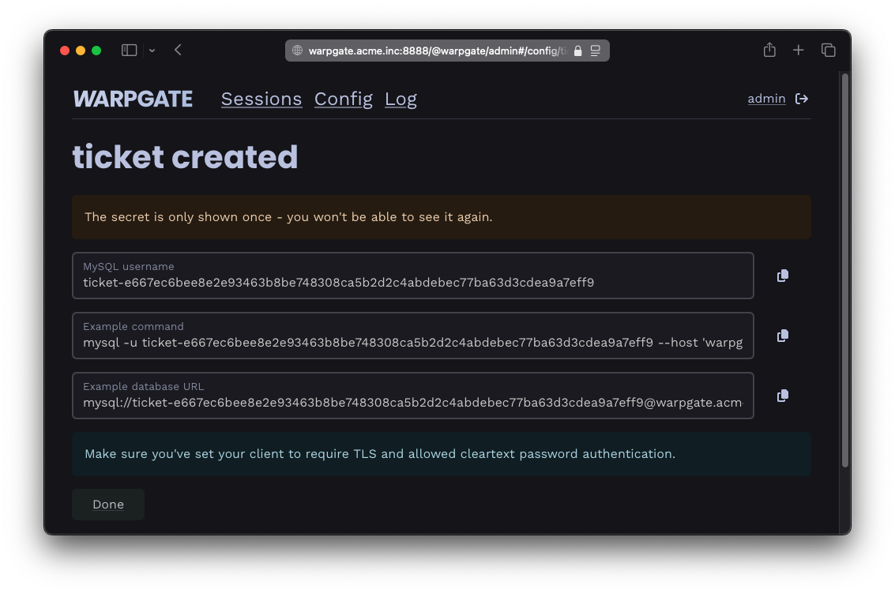

Access tickets§
You can issue tickets that grant a specific user access to a specific target, bypassing authorization. This is especially useful for non-interactive sessions where 2FA flows aren't possible, e.g. when connecting an application to a database or an API through Warpgate.
Creating a ticket§
In the admin UI, create a ticket in the Config -> Tickets section, selecting a user account and a target:

Creating a ticket
Once the ticket is created, you'll see the protocol-specific connection instructions. In this example, for an MySQL database, the ticket is passed as a part of the connection string / DATABASE_URL:

Ticket connection instructions